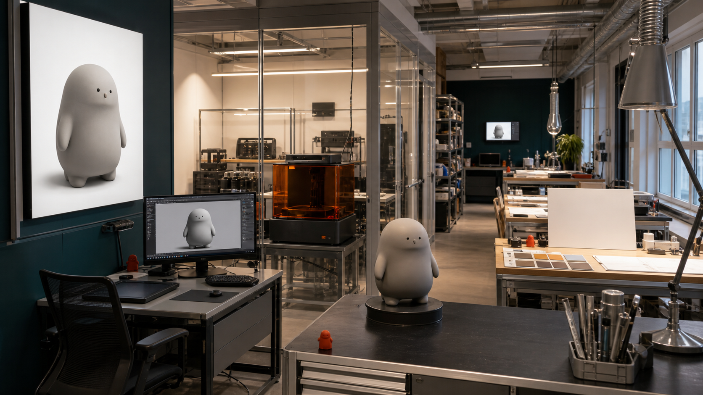
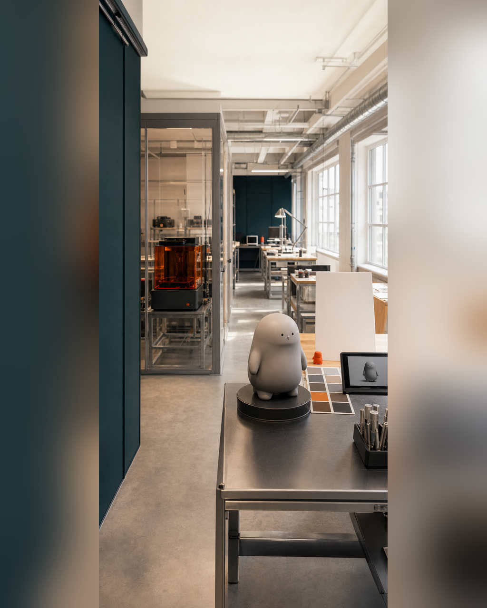

这门课不是软件课，而是一次完整交付
把 AI 出图、三维生成、Nomad、3D 打印、涂装和建站分别学一遍，并不自动形成一个完整项目。每个工具都可能产生一张图、一个文件或一次操作记录，但如果没有共同的项目卡、版本和验收目标，这些结果就无法证明它们属于同一条生产链。 这种理解会把注意力集中在“软件会不会用”，却忽略交付真正要回答的问题：当前输入是否足够，模型能否展示和制造，实体样验证了什么，图片与说明是否对应当前版本，课后是否能沿着文件和问题记录继续。缺少这些关系，五天结束后仍可能需要从头整理。

具体问题
把 AI 出图、三维生成、Nomad、3D 打印、涂装和建站分别学一遍，并不自动形成一个完整项目。每个工具都可能产生一张图、一个文件或一次操作记录，但如果没有共同的项目卡、版本和验收目标，这些结果就无法证明它们属于同一条生产链。
这种理解会把注意力集中在“软件会不会用”，却忽略交付真正要回答的问题：当前输入是否足够，模型能否展示和制造，实体样验证了什么，图片与说明是否对应当前版本，课后是否能沿着文件和问题记录继续。缺少这些关系，五天结束后仍可能需要从头整理。
核心判断
完整交付的判断单位是同一个项目，而不是软件数量。每一阶段都应留下四类证据：真实存在的文件或实物、写清楚的用途、可以追溯的版本、能够进入下一阶段的验收结果。工具只是形成这些证据的手段。
因此，AI 视觉用于建立和补齐输入，三维工具用于生成与人工修正，GLB 和 STL 分别承担展示与制造，打印和灰模用于检验结构，涂装与包装方向用于建立产品化表达，独立站与内容计划用于持续发布。任何软件截图、渲染图或方向示意都不能替代相应 Gate 的真实证据。
步骤或标准
可按以下六项检查一条交付链是否成立。每项都要记录文件位置、当前版本、验收结果与下一责任。
- 定义交付问题：在项目卡中写明主要用途、五天内必须验证的问题、预计尺寸、版权边界，以及主方案、备选方案和降级方案。
- 统一输入与版本：让视觉输入、源模型、修正记录和文件命名指向同一项目版本，不用“最终版”或截图代替编号。
- 分别验收数字文件：GLB 在目标网页或查看器中测试；STL 在真实尺寸和切片环境中检查封闭、厚度、连接、拆件与支撑。
- 保留实体证据：用灰模、局部样或小尺寸样记录结构、装配、细节和失败原因；未通过时退回修正。
- 核对表达资产：配色色板、涂装状态、包装方向、说明卡和拍摄素材必须与当前模型版本一致，并准确标注完成状态。
- 完成可继续交接：保存独立站源码、GLB 展示、平台文案模板、30 天计划、未完成项和下一责任，确保课后可以直接继续。
常见错误
以下错误会让“学过很多工具”与“完成一次交付”之间出现断裂。
- 把目标写成学会若干软件菜单；后果是各工具没有共同项目和验收对象，操作结束后无法形成可继续的结果。
- 只保存渲染图或操作截图，不保存源文件、版本和验证记录；后果是修改、重打、网页更新和协作无法追溯。
- 前一 Gate 未通过就继续打印、涂装、包装或发布；后果是结构、版权与版本问题进入成本更高的阶段，返工扩大。
- 把方向稿、灰模、局部样或页面草稿写成正式商品；后果是事实和完成度边界失真，误导展示、合作与报名判断。
- 每个环节各自选择看起来最好的版本；后果是原画、模型、样件、说明卡和网页不再属于同一项目。
与五天课程的关系
这一主题横跨 Day 1 至 Day 5。Day 1 在 Gate 1 锁定用途、版权、视觉输入、尺寸以及主 / 备 / 降级方案；Day 2 在 Gate 2 验收人工修正模型、GLB、STL、真实尺寸、厚度、连接、拆件和可支撑性；Day 3 在 Gate 3 用灰模、局部样或小尺寸样完成实体验证。
Day 4 通过 Gate 4 核对涂装、包装方向、产品信息、图片、版权和成果描述，Day 5 再把当前真实结果整理进独立站、GLB 在线展示、平台文案模板和 30 天推广计划。完成本阶段后，下一阶段是课后 30 天迭代：按问题记录修正模型、补充素材、完善页面，再评估正式包装、批量复制、展览或销售准备。
事实 / 案例 / 完成度边界
本文依据课程公开的五天安排、四个 Gate、结课成果包和课后计划整理。当天计划图片中的工作区、屏幕、文件、灰模、色板、包装方向件和网页设备都属于课程方法示意，不是学员案例、真实委托成果，也不代表课堂、制作或结课已经发生。真实案例只有在来源、授权、版本与完成状态可核验时才能单独标注；示意图不能替代真实案例。
五天内的目标是形成第一版可继续发展的交付链，具体完成度受起点、结构复杂度、尺寸、设备、材料、打印排程和修正次数影响。课程不承诺人人完成商业级精修、一次打印成功、正式包装印刷、批量生产、正式展览、授权成交或销售；方向稿、灰模、局部样、包装方向和页面草稿必须按真实状态命名。
报名入口
如果你已有 IP / 角色资产，可以在报名资料中说明现有原画、角色设定或三维文件，以及希望形成的实体、网页或传播交付；不需要先把所有软件和制造环节独自完成。
如果你只有想法、草图或初步设定，也可以如实说明故事、参考方向、希望做成的物品和现有设备。两类起点都从 Day 1 的范围与 Gate 判断进入同一条生产链。公开报名地址：https://wj.qq.com/s2/27296919/9499/

课程时间：2026 年 10 月 2 日至 10 月 6 日｜青岛｜每班限 10 人
填写报名资料 →